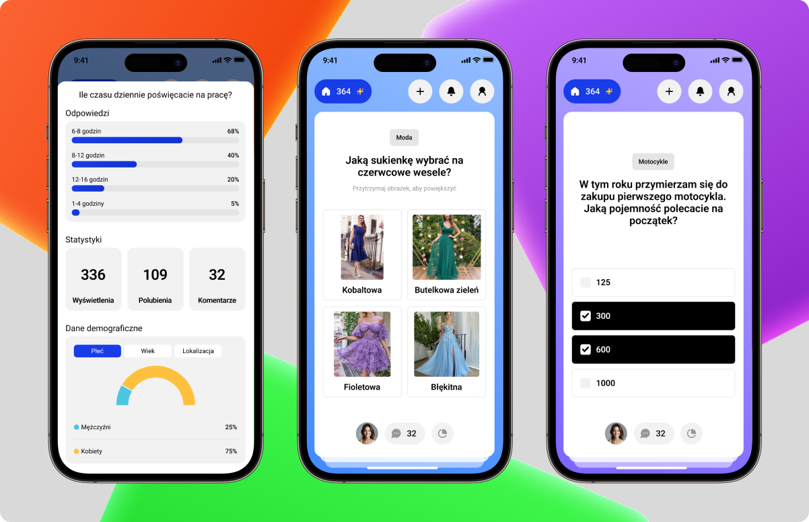
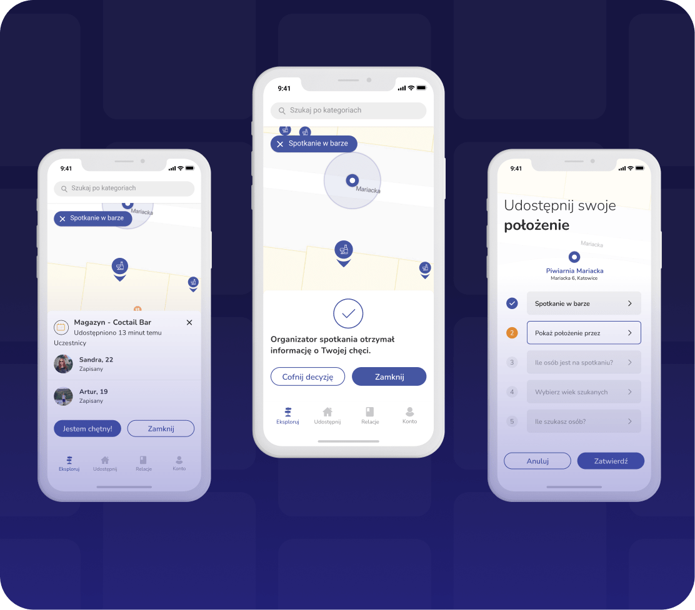
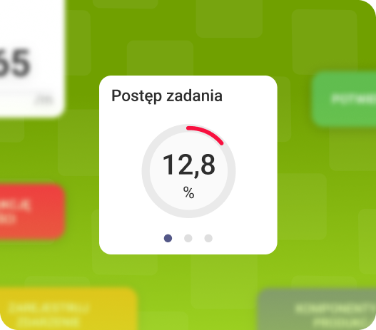
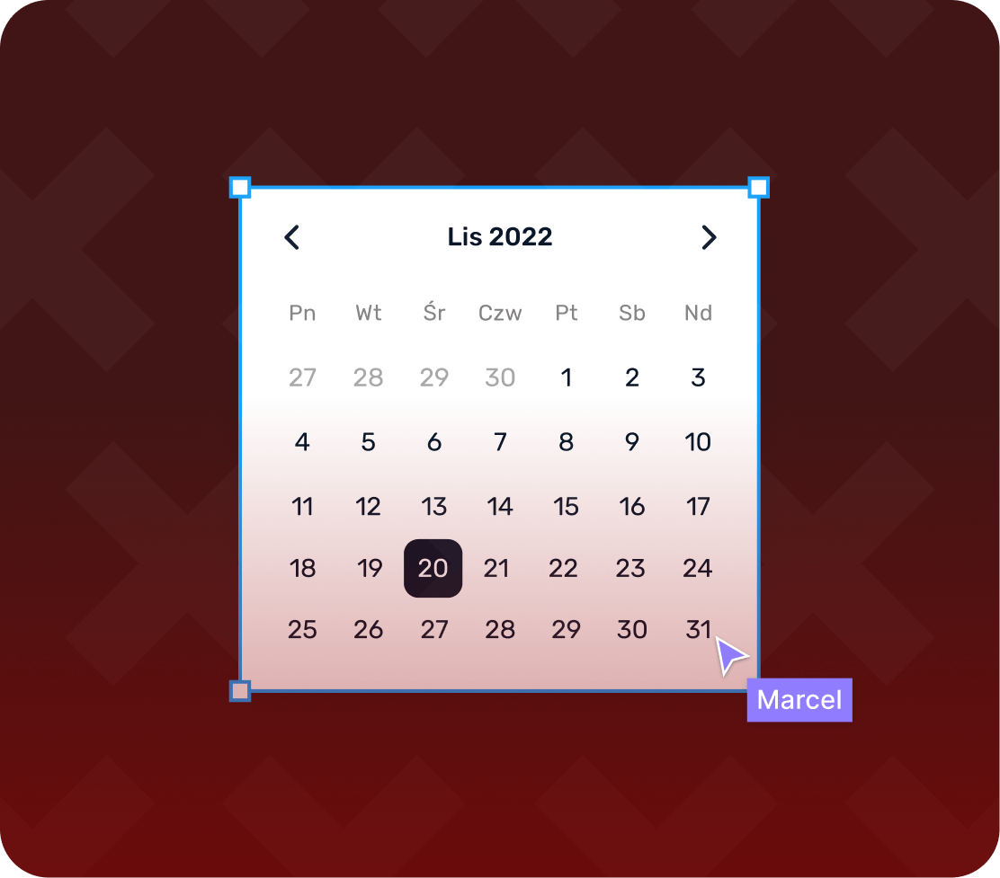
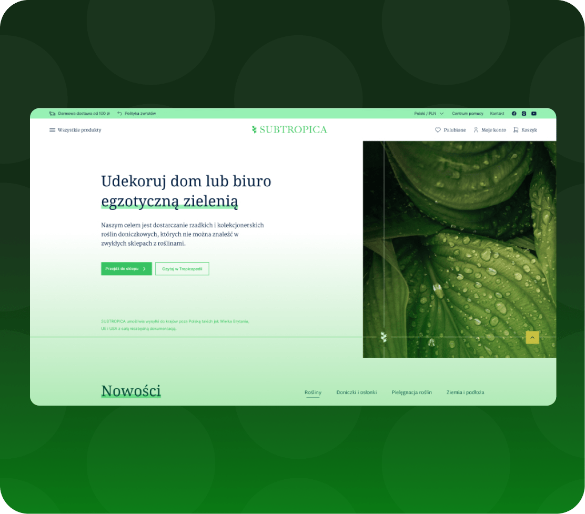

Wieloletnie doświadczenie
Od 8 lat pracuję zarówno nad nowymi koncepcjami, jak i rozwijaniem istniejących projektów. Mam doświadczenie w przekładaniu potrzeb biznesowych i użytkowych na czytelne i użyteczne interfejsy.
Kilka słów o mnie
Od 8 lat pracuję zarówno nad nowymi koncepcjami, jak i rozwijaniem istniejących projektów. Mam doświadczenie w przekładaniu potrzeb biznesowych i użytkowych na czytelne i użyteczne interfejsy.
Aplikacje mobilne, web, dashboardy i design systemy i inne typy projektów to coś z czym mam do czynienia na codzień. Przez lata mam je przepracowane od fundamentów, po złożone przypadki biznesowo - użytkowe.
Łączę wiele aspektów projektowych w jeden proces. Pracuję tak, by rozwiązania były spójne, skalowalne i łatwe do rozwijania. A także dbam o to by moja wiedza techniczna w pracy z developerami, była wciąż aktualna.
Prowadzę projekt od etapu zrozumienia problemu, przez analizę biznesową i user flow, aż po finalny UI i współpracę z zespołem Dev/QA. Staram się, by decyzje projektowe miały sens zarówno dla użytkownika, jak i dla samego produktu.
Portfolio


Praktyczne animacje, które ułatwiają użytkownikowi odbiór aplikacji poprzez dawanie wskazówek lub uwidocznianie zmian wynikających z jego działania.
Ich celem jest zwiększenie intuicyjności witryny i sprawienie, że interakcja z nią będzie dla użytkownika łatwiejsza i bardziej naturalna.
Motion design
Odświeżenie aplikacji pod względem UI i UX, która jest kierowana jako smart home assistant dla mieszkańców, chcących utrzymać bezpieczeństwo na swojej posesji.
Mobile
Mobilny feed oparty na krótkich ankietach, natychmiastowych wynikach i prostym kreatorze pytań.
Mobile
Przeprowadzenie analizy grupy docelowej w celu zrozumienia ich życia społecznego, oceny otwartości na nowe relacje, zdolności do nawiązywania znajomości oraz oceny ewentualnych trudności w podejmowaniu inicjatywy ze strony członków grupy.
Mobile
Dla klienta zajmującego się tworzeniem oprogramowania w sektorze utrzymania produkcji zaprojektowany został moduł odpowiedzialny za konfigurowanie dashboardu użytkownika. Jego fundamentem są czytelność, intuicyjność oraz dostosowanie do potrzeb pracowników, co umożliwia efektywne monitorowanie kluczowych wskaźników.
Web
Starannie wypracowany zbiór wytycznych, komponentów
i wzorców, mający na celu usystematyzowanie i unifikację
wszystkich interfejsów cyfrowych związanych z marką klienta.

Celem projektu było stworzenie produktu dla miłośników
egzotycznych roślin, który jednocześnie zachęca do
edukacji poprzez dostarczanie tematycznych treści i ułatwia znalezienie interesujących okazów.
Ścieżka zawodowa
02.2023 – Obecnie
Product Designer
Projektowanie aplikacji webowej oraz mobilnej wraz z tworzeniem pełnego design systemu. Praca nad funkcjonalnościami związanymi z AI, harmonogramami Gantta oraz rozwój projektów na poziomie analizy biznesowej.
Producent oprogramowania przemysłowego, z własnym oprogramowaniem, tworzący rozwiązania pomagające usprawniać procesy produkcyjne i okołoprodukcyjne oparte na systemach IT, automatyce oraz aplikacjach dedykowanych.
queris.pl04.2021 – 02.2023
UI/UX Designer / Leader
Projektowanie iteracyjne dla: Desktop, Web i Mobile. Aktywna współpraca z zespołem QA i deweloperskim. Tworzenie produktu na poziomie procesu koncepcji, developmentu jak i wspieranie wypuszczonej apki na sklep, wzbogaconej o nowe funkcjonalności. Uczestniczenie w wyjazdach oraz rozmowach z grupą docelową.
Zagraniczna firma tworząca własne oprogramowanie kierowane do graczy baseballu, golfa, tenisa oraz atletów. Trafia ono do klientów indywidualnych oraz drużyn rozgrywających turnieje na całym świecie.
flightscope.eu06.2018 – 04.2021
UI/UX Designer
Opracowywanie koncepcji dashboardów i raportów na aplikacje wieloplatformowe dla hal produkcyjnych, ulepszanie istniejących rozwiązań dla stałych klientów oraz współpraca z zespołem deweloperskim.
Producent oprogramowania przemysłowego, z własnym oprogramowaniem, tworzący rozwiązania pomagające usprawniać procesy produkcyjne i okołoprodukcyjne oparte na systemach IT, automatyce oraz aplikacjach dedykowanych.
queris.plSkontaktuj się ze mną
Wystarczy jedno kliknięcie, aby pomóc zmienić pomysł w produkt. Wypełnij formularz, aby udostępnić mi więcej szczegółów na temat projektu.